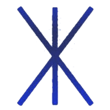
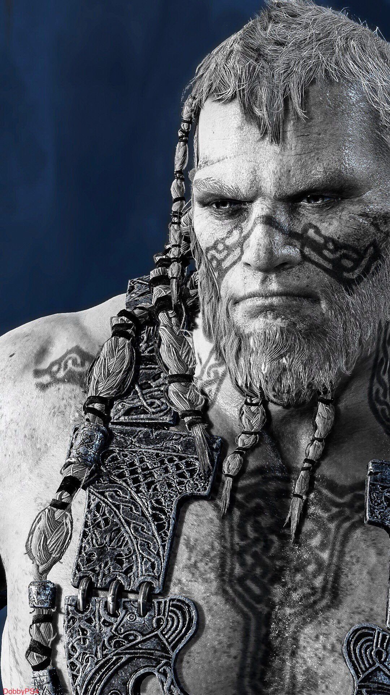
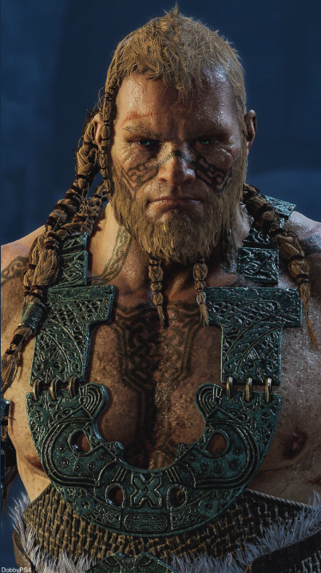

Магни также, похоже, продемонстрировал некоторую извращенную форму чести, поскольку он был готов дать Кратосу и Атрею шанс сдаться без боя, но был совершенно (даже желательно) готов противостоять им, когда они отказались. Он также проявил явное отвращение к своему брату после того, как Моди спросил, может ли он держать Атрея при себе, предполагая, что, в отличие от его брата и дяди, есть пределы тому, насколько далеко он готов зайти в своей развращенности. Это также видно, когда Кратос говорит Атрею выйти из их битвы, понимая его усилия и беспокоясь о своем сыне, но все же позволяя ему Моди.

Норвежская мифология
В скандинавской мифологии Магни - удивительный сын озирского бога Тора и его возлюбленного йотунна Ярнсакса. Через своего отца он является старшим сводным братом Móði (упоминается в игре как «Modi») и rúðr (упоминается в диалоге как «Thrud»), а через свою мать - сводный брат Heimdallr.
Согласно третьему стихотворению Поэтической Эдды , Vafþrúðnismál, и Магни, и Моди переживут Рагнарёка, унаследовав легендарный молот своего отца, Мьёльнир.
В книге Снорри Стурлусона Skáldskaparmál (вторая часть Прозаической Эдды ) трехлетний Магни считается единственным озирским богом, достаточно сильным, чтобы оторвать ногу йотуна Хрунгнира от Тора. В награду за свою силу Тор подарил Магни лошадь Гулфакси.

Игра
Несмотря на то, что оба были детьми в то время, Магни и Моди были единственными озирами, достаточно могущественными, чтобы освободить своего отца из-под ноги мертвого йотуна Хрунгнира. Однако, поскольку Мимир был единственным свидетелем этого события, вся заслуга в спасении Тора была отдана Магни.
В юности Магни быстро стал считаться любимым ребенком Тора. В результате Моди начал медленно обижаться на него и их отца, хотя и не до крайности.
Во время Озир-ванирской войны Магни вместе со своим братом участвовал в сражении. Вместе они сразились и убили богиню ванов Нертуса.
Один вызывает Магни и Моди и приказывает помочь Бальдру в его охоте на Кратоса после неудачной первой встречи первого с греческим богом. Они посещают заключенного в тюрьму посла племени озиров Мимира . Стремиться узнать местонахождение Кратоса и Атрея, а также как с ними бороться. Однако Мимир не знает их местонахождения и отказывается подчиняться им, даже после того, как Бальдур обещает урезонить Одина, когда он вернется в Асгард.
С помощью Моди Магни может выследить Кратоса и Атрея у трупа Тамура, отметив, что молот, который они переместили, «... не упал сам по себе». В конце концов Магни находит Кратоса и Атрея, когда тот падает на землю сверху, сражаясь с огра . Отбрасывая труп зверя, он приказывает паре сдаться, на что Кратос сразу же отказывается, начиная бой. В конце концов Кратос вонзает лезвие своего топора глубоко в череп Магни, убивая его. Моди охватывает страх, увидев смерть своего брата, и убегает.

Личность
Как и его товарищ озир, Магни был очень садистским и кровожадным, что видно, когда он угрожает Мимиру после отказа помочь троице найти Кратоса и Атрея. Магни, кажется, особенно любит битву, что проявляется в его довольной реакции после того, как Кратос, естественно, отказывается сдаваться. Короче говоря, его не волнует, что Один хочет от спартанца и его сына, исключительно желая сражаться с достойным противником.
Он и его брат были склонны ссориться, в частности Магни, казалось, раздражал его дерзость. Несмотря на это, эти двое все еще были близки к цели, и вместе в бою дуэт был грозной силой. Оба брата также имели репутацию явно низкого интеллекта, поскольку их постоянно называли идиотами / дураками ряд персонажей, таких как Бальдур, Мимир, Кратос, Синдри, последний, который называл их «идиотскими сыновьями Тора» и Брок, который назвал Магни крикуном. Мимир заявляет, что они сделают все, что их дядя заставит.
Из них двоих Магни оказался самым умным или, по крайней мере, менее импульсивным и незрелым. Также в отличие от Моди, который выразил недоверие к Бальдру, Магни был готов подчиняться приказам своего дяди из-за собственного доверия Тора к богу. Он также почувствовал запах Синдри, из -за чего он сказал Моди, чтобы тот тоже его нашел. Однако слабостью Магни была его хвастливая самоуверенность.

Магни также, похоже, продемонстрировал некоторую извращенную форму чести, поскольку он был готов дать Кратосу и Атрею шанс сдаться без боя, но был совершенно (даже желательно) готов противостоять им, когда они отказались. Он также проявил явное отвращение к своему брату после того, как Моди спросил, может ли он держать Атрея при себе, предполагая, что, в отличие от его брата и дяди, есть пределы тому, насколько далеко он готов зайти в своей развращенности. Это также видно, когда Кратос говорит Атрею выйти из их битвы, понимая его усилия и беспокоясь о своем сыне, но все же позволяя ему Моди.
Еще один примечательный фактор, который мотивирует Магни, как и его брата, хотя и в меньшей степени, - это доставить удовольствие своему легендарному отцу и доказать, что он достоин унаследовать Мьёльнир. Магни пользовался благосклонностью самого Тора до такой степени, что могучий бог пришел в ярость на Моди после смерти Магни, полагая, что он оставил его умирать.


Мастер боя: Магни, как сын величайшего воина Асгарда Тора, был, скорее всего, чрезвычайно опытным и опытным бойцом с обширной подготовкой и опытом, что подтверждается множеством шрамов на его теле. Фактически, он бросает вызов самому Кратосу, пока тот позже не использует свою превосходящую силу и скорость, чтобы убить его.
Владение мечом: Магни показал очень хорошее владение своим вихревым клинком, несмотря на то, что держал его в резерве. Он также может дополнительно усилить его своим освещением, чтобы нанести больший урон своему противнику.
Cyclonic Blade: Магни носит огромный палаш, закаленный вихревым громом. Этот меч позволяет Магни вызвать «Снежную слепоту» вместе со своим братом Моди; а также может действовать как канал для громовых и молниеносных способностей полубога. В бою с ним использует запасной хват.